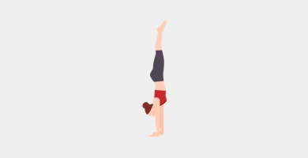

Circo
Aquí te enseñaré como hacer el pino:
Primero tienes que tirarte al suelo, poner las manos y subir las piernas,mete la barriga y mantente recta, intenta mantenerte de pié con las manos en el suelo
Ahora aprenderemos a hacer el puente:
Empezaremos en el suelo, echaremos las manos hacia atrás buscando el suelo y levantaremos el culo hasta conseguir el arco del puente

¿qué es el arco?
lo que estamos buscando al hacer el puente es arquear la espalda